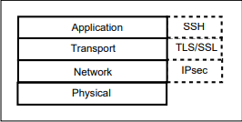

Tunneling
Encrypted tunneling technologies:
•
IPsec VPN:
Because it work in the Network layer it can automatically secure applications at the Application layer
•
TLS/SSL:
TLS/SSL provide security through implementation into applications, like in
HTTPS
•
SSH:
It fits in at the top of the model at the application layer. This makes SSH
an application by nature and work beside other network applications like ftp,http and others.
SSH can be used
in a port-forwarding mode to create a tunnel for other applications
Of course it is possible to tunnel
traffic through SSH running through TLS on a trusted network using IPsec, but it is not practical since the traffic
is then encrypted and decrypted three times and uses a huge amount of CPU bandwidth. Selecting one of the
technologies is normal
Bibliography:
•
http://olemartin.com/projects/VPNsolutions.pdf